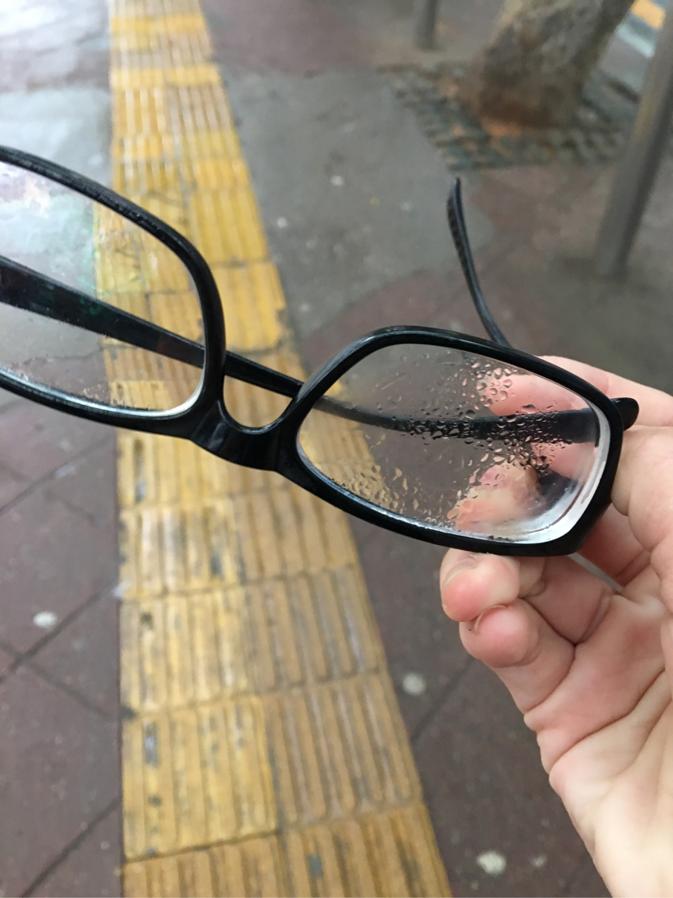
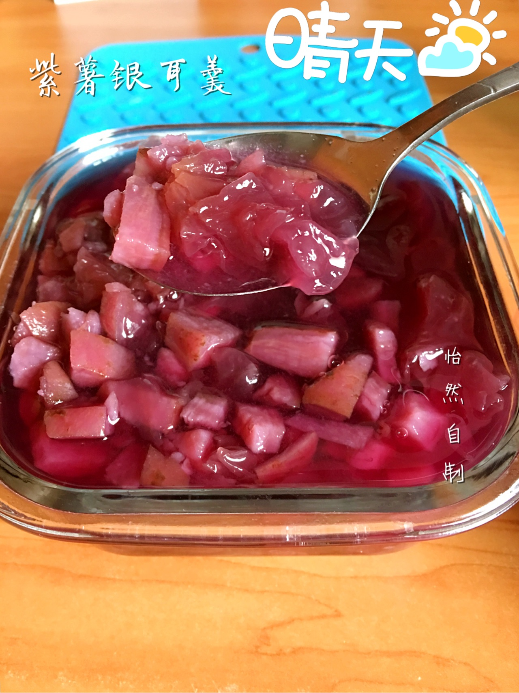

正文: 【我的回答都图多，朋友们流量慎点～】
突然想来回答这个问题可能是因为和何医生的那段幸福恋爱时光越走越远，亦或是又一年的生日离我越来越近。
过早地接触了爱情却又无力挽留，在该谈恋爱的年龄却选择了独身主义，夜深人静的时候，胸口的那种无力感和失落感压的我喘不过来气，想深思却又不敢想，不想谈恋爱，不敢谈恋爱，不能再谈恋爱。
舍友一个个的有了男朋友，异地的，同地的，同校的；一起去食堂、小餐馆、快餐店、小吃摊儿的机会越来越少，刚决定一起去哪里她就被一个电话叫走的桥段越来越多。
那甜蜜的微笑，不是我的；幸福而期待的眼神，也不是我的。
不过虽然有时会被“要不然就找个男友，省得自己一个人太孤独，有时候也会尴尬”这样的思想困扰，我还是决定独身主义，可能不会终生独身，但现在的心境，可能真的已经不再适合我去谈恋爱，我需要静养，调整，解脱自己。
想好以后我开始了一个人的生活。
【要么就学习，要么就运动。】
这是我对自己最基本的要求，删除了手机和平板上唯一的游戏消消乐，我的生活在学习、运动两点间不断往复。
给ipad装了键盘，学着使用网上安利的各种学习类软件做复习，做总结，做报告，整理笔记。

朋友们相信我，ipad+键盘的组合绝对比本儿好用，大本儿就更不用说，比以轻薄著称的mac也好用很多很多！！这里也推荐给大家哦。
我的专业是化学类专业，有时候学的知识繁琐复杂，必须要整理才可以理解掌握其原理
当然还有双语类学科，就更加需要多总结，归纳，互译，背诵
离出国的日子越来越近，开始备考托福，背单词，是首当其冲的事情。
不要怂，就是干，这几本书的词汇不论难易，都要去啃，8k-1w的词汇，一个一个去拿下，因为没有男朋友所以有更多的时间去搞学习。
在TOEFL班上搞presentation，准备了好久，准备得很充分，讲出来效果也不错，只是。。。明明给大家讲了好多干货结果硬生生被演绎成了爱情故事（笑哭
在一个app上参加了晨起打卡的活动5:40-7:00为打卡时间，我这么多年本来睡眠就不多，于是就开始了坚持晨起，周六日都不断的那种，时刻提醒自己，你的生活里现在可能出现频率最高的也只有你一个人了，争分夺秒的好好干吧。
补充一下我早起打卡的app是课程格子里面的一个活动，需要交28rmb的押金，一旦有一天未签到，押金就被扣光啦，但是如果全勤，会反38rmb哦～
跑步·健身
除了学习以外，我最喜欢的就是运动，从去年四月分手我穿上跑鞋开始夜跑，到现在，晨跑夜跑健身自由搏击已有一年有余。
开始中长距离跑步一年以后，在两个月以前我开始了【我用双腿看长沙】计划
大约17年11月份我将离开长沙，排除假期回老家，大约还有500天我可以呆在这个城市，所以在这一段时间里，我想尽量地靠自己这一双腿，把长沙跑个遍，这个城市有时候很美，有时候有些无情，大多数时候天空阴霾，晚上看不见星星和月亮，这里我留下了不少难以忘记的回忆，这一次，我靠着双腿，一步一步沿着回忆走。
晨跑5k一开始跑不了太快
慢慢的就可以坡得快一些，这个是夜跑
这个是晨跑，6:00就开始跑了，很早很早就到了雅礼中学的门口，那天还在下着小雨，跑的比较快配速可以到了五分钟多一点点


有时候也会跑迷路，靠着地图再找回来，有时时候会很懵
距离也会增加，其实现在跑8-15k都是没有问题的，只不过平均速度会慢下来一些，不过跑的开心就好啦
在老家健身一直都有教练，来到学校太忙，就没有请教练，跟着keep自己练，每个月时间也不是很多，大约1000min
我比较胖，一直都在减脂增肌
有了肌肉线条的臂
有了有曲线的臀，屁股是我的，"纹身"是贴纸（认真脸。
45kg的硬拉，不过试了试深浅，感觉拉55-60kg没问题
我依旧胖，但因为有了运动和坚持生活不再一成不变，也不再沉沦在悲伤之中不可自拔，身体变得紧致多了也有了曲线，虽然不好但说明我还有很大的成长空间。
因为开始练胸了，所以自然而然的就有了这个
当然也不是完全没有闲暇的时光，比如我会画数字油画玩
画好加了个框子，很好看啊
做蛋糕

甚至做盒饭给学弟学妹们吃
自己给自己在宿舍做点吃的

偶尔我也会穿上大高高跟鞋
也会跟朋友出去看电影，然后自己吃点好吃的，自己给自己买

-有人追求你吗？
-有
-你有喜欢的人吗？
-有
-你们会在一起吗？
-可能不会

喜欢我并且我也喜欢的那个男孩和我讲
《一代宗师》里说，
“念念不忘必有回响。”
“可我也只能到喜欢为止了”
就是这样吧，这就是然然的生活。
感谢你完整的看完我的回答
如果你想更多的了解我
这是我和何医生的爱情
你们的男朋友都是哪里找的？-怡然的回答
http://www.zhihu.com/question/38736029/answer/79997065
一米五几的女生和一米八几的男生谈恋爱是什么样的一种体验？-怡然的回答
http://www.zhihu.com/question/26738230/answer/88167238
这是我的爱好
特别爱吃肉是怎样一种体验？-怡然的回答
http://www.zhihu.com/question/38604172/answer/87541876
我还是一个喜欢做饭的姑娘
有一个会做饭的女朋友是怎样一种体验？-怡然的回答
http://www.zhihu.com/question/32674678/answer/90284388
这是我南下求学这几年遇到的一些尴尬事
什么样的男生让你觉得low到爆？-怡然的回答
http://zhihu.com/people/9eac38f007bc8d041351c23fd7593d8a